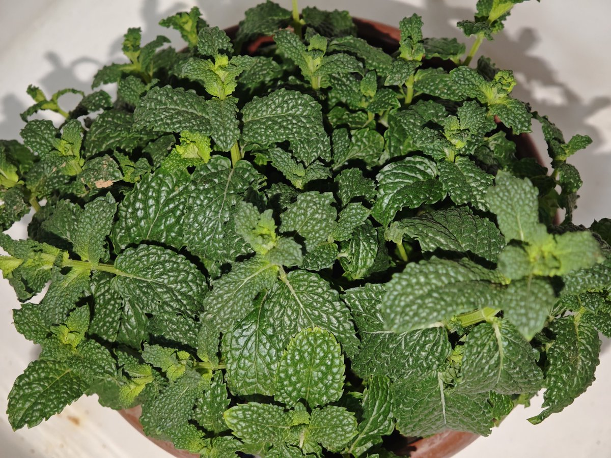
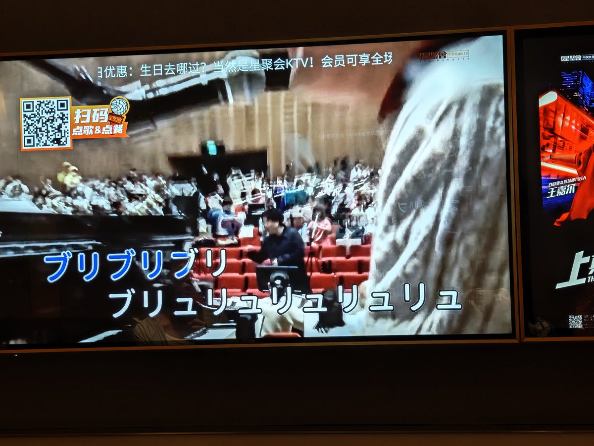

𝓈𝒶𝒸𝒶𝒷𝒶𝓂𝒷𝒶𝓈𝓅𝒾𝓈
@youlingjiayu
和他一人买了盆薄荷回去，希望能好好长叶子然后给我夏天掐了泡薄荷水。
总觉得人与人之间的羁绊喜加一了；不过他确实是一名值得保持友谊的朋友，或者仅对于我而言——他一直积极地倾听我突发的联想和记忆模糊的杂学小知识并且和我一起求证，愿意一起去解决问题和策划方案，已经远胜过大部分人了。


𝓈𝒶𝒸𝒶𝒷𝒶𝓂𝒷𝒶𝓈𝓅𝒾𝓈
@youlingjiayu
KTV免费升到了中包，然后我俩一人一张桌，一次点两首地唱歌，他唱歌还蛮好听（和我对比）。
但是发现歌单里有这首歌的时候我爆发出惊天大叫。 https://t.co/aaHmaF8WLy